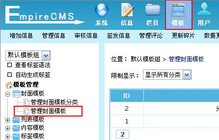
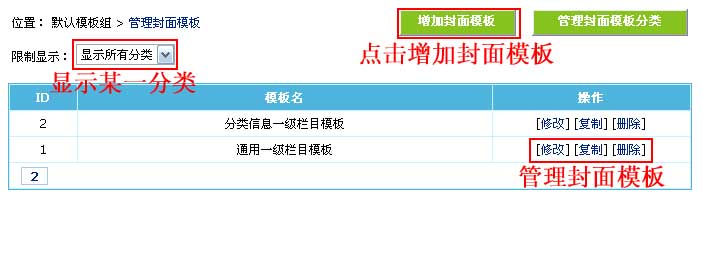
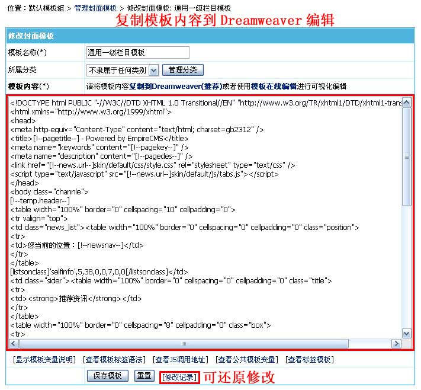
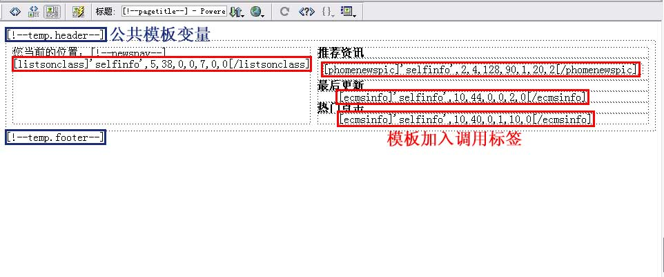
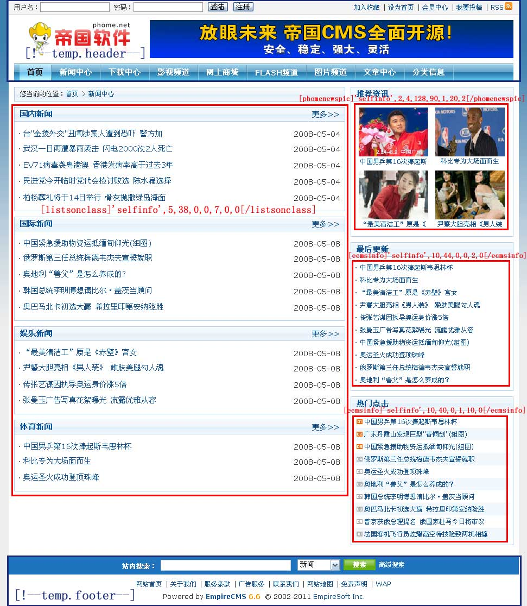

| 管理封面模板 |
| 1、登录后台，单击“模板”菜单，选择“管理封面模板”子菜单，进入管理封面模板界面： |
|  |
| 2、进入管理封面模板界面： |
|  |
| 3、点击通用一级栏目模板的“修改”进入修改封面模板界面： |

| [!--pagetitle--]：页面标题 |
[!--pagekey--]：页面关键字 |
[!--pagedes--]：页面描述 |
| [!--news.url--]:网站地址(参数设置的站点地址) |
[!--newsnav--]：所在位置导航条 |
[!--class.menu--]：一级栏目导航 |
| [!--self.classid--]:本栏目/专题ID |
[!--class.keywords--]:栏目/专题关键字 |
[!--class.classimg--]:栏目/专题缩略图 |
| [!--class.name--]：栏目名 |
[!--class.intro--]:栏目/专题简介 |
[!--bclass.id--]: 父栏目ID |
| [!--bclass.name--]:父栏目名称 |
|
|
| 支持公共模板变量 |
支持所有模板标签 |
支持PHP代码 |
|
| 4、把“封面模板内容”复制到Dreamweaver进行可视化编辑，如下图： |
|  |
| 5、修改模板后，复制页面的代码到后台的模板内容文本框，然后点击“修改”即可修改完毕。 |
| 6、刷新栏目页，最终内容模板的预览效果： |
|  |